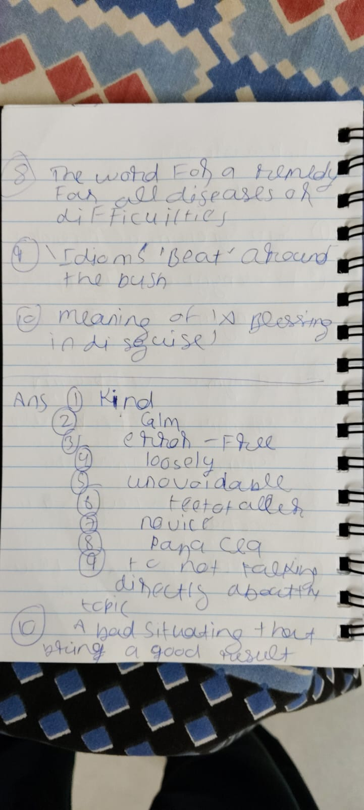
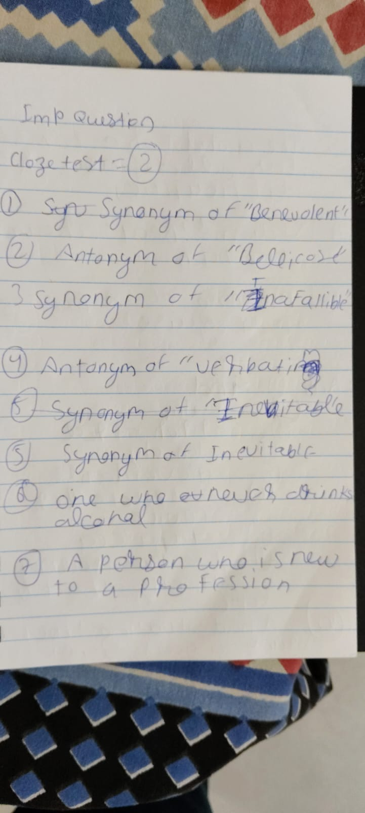
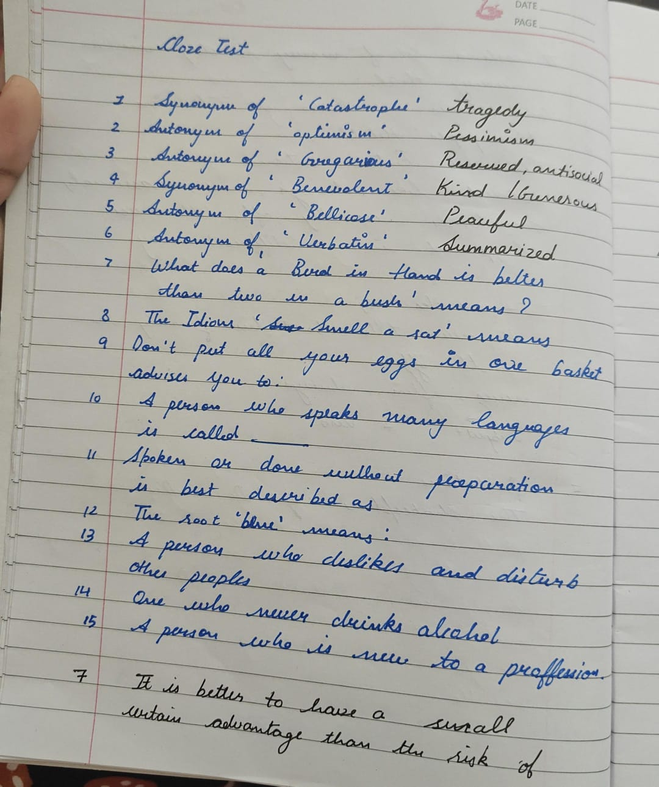
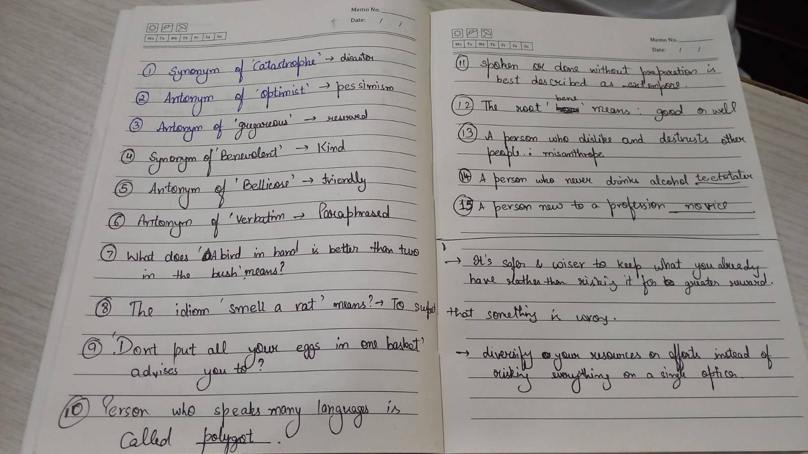

Verbal Ability (VA)
Comprehensive exam prep portal — 24-question master bank compiled from 4 handwritten assets + PDF worksheet. Covers vocabulary pairs, idioms & phrases, one-word substitutions, Latin/Greek word roots, and grammar fundamentals.
24
Unique Questions
4 Images
+ 1 PDF Sheet
5 Categories
Vocab · Idioms · Subs · Roots · Grammar
100%
Solved & Cross-Verified
📋 24-Question Master Bank
| # | Category | Question | Answer | Sources |
|---|---|---|---|---|
| 1 | Vocabulary | Synonym of 'Catastrophe' | Disaster (Calamity, Cataclysm, Tragedy) | |
| 2 | Vocabulary | Antonym of 'Optimist' | Pessimist | |
| 3 | Vocabulary | Synonym of 'Commence' | Begin (Start, Initiate, Launch) | |
| 4 | Vocabulary | Synonym of 'Benevolent' | Kind (Charitable, Generous, Altruistic) | |
| 5 | Vocabulary | Antonym of 'Bellicose' | Peaceful (Pacific, Friendly, Non-aggressive) | |
| 6 | Vocabulary | Antonym of 'Verbatim' | Paraphrased (Inexact, Summarized, Loose) | |
| 7 | Vocabulary | Antonym of 'Gregarious' | Reserved (Antisocial, Introverted) | |
| 8 | Vocabulary | Synonym of 'Infallible' | Unerring (Flawless, Error-Free) | |
| 9 | Idiom | What does 'Beat around the bush' mean? | To avoid talking directly about the main topic; to delay getting to the point | |
| 10 | Idiom | What does 'Smell a rat' mean? | To suspect deception, dishonesty, or that something is wrong | |
| 11 | Idiom | What does 'Don't put all your eggs in one basket' mean? | Diversify your resources or efforts instead of risking everything on a single option | |
| 12 | Idiom | What does 'A blessing in disguise' mean? | An apparent misfortune that ultimately results in an unforeseen benefit | |
| 13 | Idiom | What does 'A bird in hand is better than two in the bush' mean? | It's safer to keep what you already have rather than risking it for a greater reward | |
| 14 | Substitution | One who never drinks alcohol is called? | Teetotaler | |
| 15 | Substitution | A person who is new to a profession is called? | Novice (Neophyte, Tyro, Beginner) | |
| 16 | Substitution | Something spoken or done without preparation is called? | Extempore (Impromptu, Unrehearsed) | |
| 17 | Substitution | A person who dislikes and distrusts other people is called? | Misanthrope (Misanthropist) | |
| 18 | Substitution | A person who speaks many languages is called? | Polyglot | |
| 19 | Root | What does the root 'circum' mean? | Around / About (e.g., circumvent, circumference) | |
| 20 | Root | What does the root 'bene' mean? | Good / Well (e.g., benefit, benediction) | |
| 21 | Root | What does the root 'anthrop' mean? | Human / Mankind (e.g., anthropology, philanthropy) | |
| 22 | Grammar | 'Each other' is used when referring to? | Two people or entities (use 'one another' for 3+) | |
| 23 | Vocabulary | Synonym of 'Inevitable' | Unavoidable (Inescapable, Certain) | |
| 24 | Substitution | The word for a remedy for all diseases or difficulties | Panacea |
24-Card Exam Drill
Loading...
Click card to reveal answer ↻
—
⚡ Quick Revision Matrices
🔤 Synonym Pairs
- Catastrophe → Disaster, Calamity, Cataclysm
- Commence → Begin, Start, Initiate
- Benevolent → Kind, Charitable, Generous
- Infallible → Unerring, Flawless, Error-Free
- Inevitable → Unavoidable, Inescapable
🔄 Antonym Pairs
- Optimist → Pessimist
- Bellicose → Peaceful, Pacific, Friendly
- Verbatim → Paraphrased, Summarized
- Gregarious → Reserved, Antisocial
💬 Idioms & Phrases
- Beat around the bush → Avoid the main topic
- Smell a rat → Suspect dishonesty
- Eggs in one basket → Don't concentrate resources
- Blessing in disguise → Hidden benefit from misfortune
- Bird in hand… → Keep what you have vs. risking for more
👤 One-Word Substitutions
- Teetotaler — never drinks alcohol
- Novice — new to a profession
- Extempore — without preparation
- Misanthrope — dislikes & distrusts people
- Polyglot — speaks many languages
- Panacea — remedy for all diseases
🌿 Latin/Greek Roots
- circum → Around / About (circumvent, circumference)
- bene → Good / Well (benefit, benediction)
- anthrop → Human / Mankind (anthropology, philanthropy)
📐 Grammar Quick Hits
- 'Each other' → for TWO people only
- 'One another' → for THREE or more people
- Reciprocal pronouns — express mutual action between entities
📖 Verbal Ability Units
Grammar Diagnostics & Sentence Correction
Subject-Verb Agreement rules, dangling and misplaced modifiers, parallelism in compound structures, conditional tenses, and pronoun-antecedent ambiguity.
Lexical Semantics & Etymology
Root word expansion using Latin and Greek prefixes, connotation vs denotation subtleties, collocations, phrasal verbs, and context-dependent usage.
Reading Comprehension & Critical Inferences
Analytical reading frameworks: distinguishing explicit factual claims from implicit deductions, paragraph transitions, tone identification, and primary purpose analysis.
Critical Reasoning & Argument Analysis
Premise-conclusion decomposition. Identifying unstated assumptions, strengthening and weakening arguments, logical fallacies, and categorical syllogisms.
Para-Jumbles & Structural Coherence
Sentence rearrangement methodologies: spotting mandatory pairs, transition discourse markers, and acronym-to-full-form sequences.
Professional & Technical Communication
Précis summarization techniques, corporate email etiquette, technical presentation pitch structure, and behavioral interview narrative frameworks (STAR method).
🖼️ Original Source Assets
Click any card to open the full-resolution original. Cross-referenced duplicate content has been merged into the master sheet above.

image1.jpeg — Answers Page
Questions 8–10 (Panacea, Beat around the bush, Blessing in disguise) + Answer keys 1–10

image2.jpeg — Imp Questions
Cloze Test marker. 8 questions: Benevolent, Bellicose, Infallible, Verbatim, Inevitable, Teetotaler, Novice

image3.jpeg — Cloze Test (Questions)
15 questions with partial answers in margin. Covers vocabulary, idioms, substitutions, and word roots

image4.jpeg — Cloze Test (Solved)
Same 15 questions as image3 with complete answer set. Primary answer-verification source
Practice Worksheet — PDF
18-question comprehensive Q&A set with vocabulary pairs, idioms, substitutions, roots & grammar